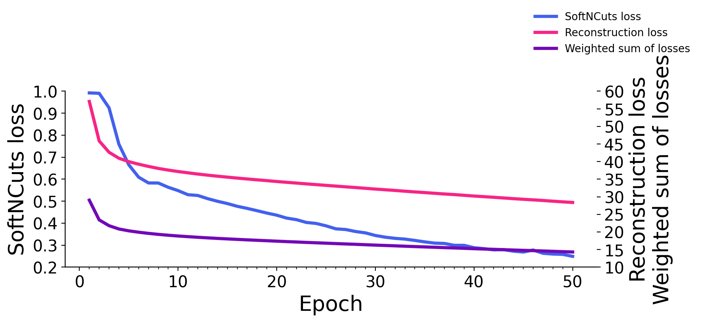

Examples of WNet3D losses, and output during training#
Goal : show the output of the WNet3D during training, and the corresponding losses
The
take_output_screenshotsnotebook was used to generate the screenshots during training
import pandas as pd
import sys
sys.path.append("../..")
from utils import *
from plots import *
show_params()
#################
SAVE_PLOTS_AS_PNG = False
SAVE_PLOTS_AS_SVG = True
Warning: Saturation in 0.9508196721311476 is too low or too high in hex color 7209B7
Plot parameters (set in plots.py) :
- COLORMAP : ████████
- DPI : 200
- Data path : C:\Users\Cyril\Desktop\Code\CELLSEG_BENCHMARK
- Font size : 20
- Title font size : 25.0
- Label font size : 20.0
%load_ext autoreload
%autoreload 2
Loss values#
csv_path = "../../other/fig3-x-losses.csv"
if not Path(csv_path).is_file():
log_path = "../../other/log.txt"
losses, epochs = extract_losses_from_log(log_path)
losses_df = pd.DataFrame.from_dict(losses, orient='index')
# save as csv in other
losses_df.to_csv("../../other/fig3-x-losses.csv")
else:
losses_df = pd.read_csv(csv_path, index_col=0)
losses_df.index.name = 'Epoch'
losses_df.columns = ["SoftNCuts loss", "Reconstruction loss", "Weighted sum of losses"]
losses_df
| SoftNCuts loss | Reconstruction loss | Weighted sum of losses | |
|---|---|---|---|
| Epoch | |||
| 1 | 0.99227 | 57.08382 | 29.03805 |
| 2 | 0.99046 | 45.87604 | 23.43325 |
| 3 | 0.92455 | 42.65216 | 21.78835 |
| 4 | 0.75902 | 40.94435 | 20.85169 |
| 5 | 0.66575 | 39.98960 | 20.32768 |
| 6 | 0.60914 | 39.26025 | 19.93469 |
| 7 | 0.58295 | 38.63013 | 19.60654 |
| 8 | 0.58262 | 38.05232 | 19.31747 |
| 9 | 0.56323 | 37.59191 | 19.07757 |
| 10 | 0.54814 | 37.17325 | 18.86069 |
| 11 | 0.52946 | 36.81464 | 18.67205 |
| 12 | 0.52598 | 36.46110 | 18.49354 |
| 13 | 0.51152 | 36.14809 | 18.32981 |
| 14 | 0.49954 | 35.84817 | 18.17385 |
| 15 | 0.48920 | 35.58164 | 18.03542 |
| 16 | 0.47675 | 35.31505 | 17.89590 |
| 17 | 0.46733 | 35.06290 | 17.76511 |
| 18 | 0.45689 | 34.82457 | 17.64073 |
| 19 | 0.44603 | 34.59145 | 17.51874 |
| 20 | 0.43645 | 34.34674 | 17.39160 |
| 21 | 0.42316 | 34.11471 | 17.26893 |
| 22 | 0.41604 | 33.90068 | 17.15836 |
| 23 | 0.40337 | 33.66850 | 17.03593 |
| 24 | 0.39882 | 33.46028 | 16.92955 |
| 25 | 0.38790 | 33.24519 | 16.81654 |
| 26 | 0.37429 | 33.03520 | 16.70475 |
| 27 | 0.37117 | 32.82695 | 16.59906 |
| 28 | 0.36206 | 32.62820 | 16.49513 |
| 29 | 0.35596 | 32.40600 | 16.38098 |
| 30 | 0.34413 | 32.19054 | 16.26733 |
| 31 | 0.33634 | 32.00090 | 16.16862 |
| 32 | 0.33110 | 31.80333 | 16.06721 |
| 33 | 0.32767 | 31.58601 | 15.95684 |
| 34 | 0.32160 | 31.38450 | 15.85305 |
| 35 | 0.31506 | 31.19447 | 15.75477 |
| 36 | 0.30943 | 30.99892 | 15.65417 |
| 37 | 0.30781 | 30.79648 | 15.55215 |
| 38 | 0.29929 | 30.62829 | 15.46379 |
| 39 | 0.29920 | 30.42325 | 15.36122 |
| 40 | 0.28847 | 30.21615 | 15.25231 |
| 41 | 0.28418 | 30.03862 | 15.16140 |
| 42 | 0.27881 | 29.85732 | 15.06807 |
| 43 | 0.27991 | 29.66614 | 14.97303 |
| 44 | 0.27281 | 29.46947 | 14.87114 |
| 45 | 0.26895 | 29.29379 | 14.78137 |
| 46 | 0.27796 | 29.12376 | 14.70086 |
| 47 | 0.26320 | 28.94697 | 14.60509 |
| 48 | 0.25966 | 28.74820 | 14.50393 |
| 49 | 0.25830 | 28.56196 | 14.41013 |
| 50 | 0.24921 | 28.38370 | 14.31645 |
Plots#
plot_losses(losses_df, losses_df.columns, colormap=[COLORMAP[1], COLORMAP[3], COLORMAP[2]])
if SAVE_PLOTS_AS_PNG:
plt.savefig("fig3-x-losses.png")
if SAVE_PLOTS_AS_SVG:
plt.savefig("fig3-x-losses.svg", bbox_inches='tight')
